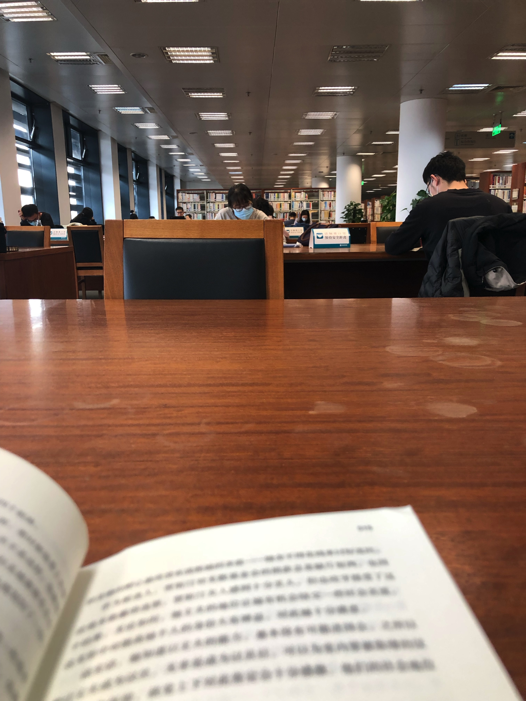

50岁时毛姆写下这个近乎完美的爱情故事，因为每个人都在故事中找到了自己。这本小说讲述了爱情中所有的不美好：背叛、猜忌、报复，还有我们终将面对的离别与自我救赎。毛姆以他冷静得近乎刻薄的方式，将一个女人的堕落与觉醒刻画得淋漓尽致。凯蒂怎么也琢磨不透，文夫到底有没有发现她出轨的秘密偷情时门把手的转动、晚餐时意有所指的话语，还有突然要带她前往霍乱之地的决定，这些都让凯蒂的神经越绷越紧。终于，忍无可忍的她打算摊牌，离婚后投奔心爱的情人。然而面纱揭开，爱情的真相与人生的意义将她的天真击得粉碎。毛姆以他冷静得近乎刻薄的方式，将一个女人的堕落与觉醒刻画得淋漓尽致–在两个人的世界里，她只能选择爱他或者失去他，以填补心灵的空虛；但当她身处更为广袤的世界，目睹了生活的残酷和人性的光辉之后，才真正获
得了心灵的宁静和对自我的救赎。
你用面纱遮蔽他人的窥探，自己也难以一睹世界之真实。
这本小说真是一部让人揪心的作品
沃尔特爱而不得，凯蒂的个人成长，查理的渣男行为都被描写的淋漓尽致
“我对你不抱什么幻想，”他说，“我知道你愚蠢、轻浮、没有头脑，但是我爱你。我知道你的目标和理想既庸俗又普通，但是我爱你。我知道你是二流货色，但是我爱你。想一想真是好笑，我竭力去喜欢那些讨你喜欢的东西，忍受折磨也要对你隐瞒起自己，实际上我并不无知粗俗、不爱散播丑闻也不愚蠢。我知道你何等害怕智慧，便尽我所能让你觉得我是个大傻瓜，跟你认识的其他人一样。我知道你嫁给我只图一时利益，我是那样爱你，我不在乎。大多数人，就我所知，当他们爱一个人，却没有得到爱的回报时就会觉得委屈不平，甚至愈发愤怒和痛苦。我不是那样，我从来没有指望你爱我，我看不出任何理由让你爱我，我也从来没想过自己会被人爱。我很感激能被允许爱你，当我时常想起你高兴跟我在一起，或者当我发现你眼中闪烁着愉快的爱意时，我就会欣喜若狂。我尽量不让我的爱来烦扰你，我知道那会让我承受不起，所以我一直察言观色，留意我的爱让你厌烦的最初迹象。大部分丈夫认为那是一种权力，我却准备当成恩惠来接受。”
个人认为沃尔特是一个很拧巴的人，当他知道凯蒂出轨后，他就带上了一副面具。他深爱着凯蒂，却不愿意过多的表达。毕竟对方是出轨者，他有自己的骄傲，但终究是败给了爱情。
假如汤森太太向我保证她会跟她丈夫离婚，假如他给我一份书面承诺，保证在两份判决生效的一个星期内娶你，我就答应你。”
“你特别瞧不起我吧，沃尔特？”
“不。”他犹豫了一下，声音十分奇怪，“我瞧不起我自己。”“因为我爱你。”
他无疑用他自己的方式深爱着凯蒂，却让凯蒂觉得自己是一个客人，而非是家庭的一员。（找不到那一段话了）
我个人感觉他的爱太卑微、太深沉了，打动了千万读者读者，却打动不了凯蒂。其实，对于这一点没有人怪凯蒂，因为换做任何一个人可能都无法接受这样的爱吧。
一开始沃尔特是想与凯蒂一起死的，因为他们去瘟疫肆虐的湄潭府无疑是送死。这点凯蒂问过他，去过之后呢，他没有想过。在书的尾声，他也承认了自己当时确实想让她死在那里。
哎，何必呢。
凯蒂在修女院中获得了新生与成长。当他们渐渐拨开层层云雾，慢慢和解，凯蒂却怀了身孕。
“我要生孩子了。”她说。
当她说出一句本以为会引发惊叹的话，他却习惯以沉默相对，这在她已见怪不怪，但从未像现在这样令她难以忍受。他什么也没说，也没做任何手势，脸上和那双黑眼睛里的神色没有任何变化，以表示他听见了。她突然有种想哭的冲动。如果一个男人爱他的妻子，他的妻子也爱他，在这样的时刻，他们本该受一种强烈的情感驱使着紧紧抱在一起。沉默令人不堪忍受，她耐不住了。
“我不知道为什么以前我从未想到这一点。我太愚蠢了，不过……由于种种原因……”
“你有多长时间……你估计什么时候分娩？”
这话似乎花了好大力气才从他嘴里说出来，她觉得他喉咙发干，就跟她自己一样。可恨的是她说起话来嘴唇一直打颤，如果他不是石头做的，这也该激发他的恻隐之心了吧。
“我估计已经有两三个月了。”
“我是那父亲吗？”
她倒吸一口冷气，他的声音里有一丝颤抖。他一贯冷静、自我克制，以至于微乎其微的情感表示都会让她震惊，这简直太可怕了。她不知为什么想到了在香港见过的一种仪器，上面有一根指针轻轻振动，人们告诉她那代表上千英里外发生了一场地震，想必上千人会丧失生命。她看着他，他面如死灰，这种苍白她以前见过一到两次。他低着头，稍稍看着一边。
“是吗？”
算了，一切都是无言。
刚开始挺为沃尔特感到难过的，但后来慢慢发现他也是一个卑微的普通人，小说最后成长了的只有凯蒂一个人。他能原谅凯蒂的出轨，却无法视肚子里的孩子不见，最后我想他是自杀吧。
别瞎忙了。我经过了一段艰难的路途，但现在已经全好了。”
凯蒂又等了一会儿，但只有沉默。他全然不动的样子撕扯着她凄苦的心。看见他竟那样毫无动静地躺着，太过让人害怕——他似乎已经准备好寂然进入坟墓。
亲眼看见深爱之人的背叛，用永无休止的忙碌去麻痹自己破碎的心，把死亡看成最后解脱的沃尔特你太傻了。
人生何其短暂，世界本来就充满了痛苦，人们却还是要折磨自己，这岂不是太可怜了吗？
你是那个痴情的凯蒂，成为了口中的那只狗，而凯蒂则变成了善人。
过去已经完结，逝者已然安息。这样是不是太过无情？她满心希望自己已经学会同情和博爱，即使不知道什么样的未来在等待着她，也感到内心有一股力量，无论将要发生什么，她都能带着轻松愉悦的心情去接受。接着，突然之间，全然说不清是何因由，那段旅行的回忆从她无意识的脑海深处浮现出来：她跟着可怜的沃尔特，两人一道前往那座饱受瘟疫摧残、让他丢了性命的城市——一天早上，天还没亮他们便坐上轿子出发。破晓之时，与其说她看到，不如说是凭直觉预见了那样一幅令人惊叹的美妙景致，一时缓和了她心里的痛苦，让尘世间的所有磨难都显得无关重要。太阳升起来，驱散了一片雾霭，她看见他们循着的那条小径蜿蜒向前，直到目力不及之处，穿插于稻田之间，横跨过一条小河，越过高低起伏的大地——也许她的过失，她做下的蠢事，还有她所遭受的不幸，并非一概徒劳无益，只要现在她能够遵循眼前这条让她依稀可辨的路。那不是亲切古怪的老沃丁顿所说的无所通达的道路，而是修道院那些可爱的修女谦卑地遵循的路——那是一条通往内心安宁的路。
所有的伤、所有的恨都该慢慢学着与自己和解。现在失恋的男女也是一样啊，如果在所爱的人背叛自己后，能有勇气断掉一切，学着与自己和解是否能像凯蒂一样获得新生。
与世界和解，与往事和解。
原谅该原谅的，忘记该忘记的。
记住该记住的，回忆该回忆的。
未来很长，当有勇气面对，当与自己和解。
让我想到了两首歌：《一直很安静》和《路过人间》
